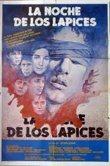

Golpes de Estado
Argentina, 1985
Esta película estrenada en el 2022, producida y dirigida por Santiago Mitre relata el caso real de la tarea del fiscal Julio Cesár Strassera, protagonizado por Ricardo Darín, y su equipo, en
el célebre Juicio a las Juntas Militares que habían instalado un régimen de terrorismo de Estado
con miles de desaparecidos y torturados, durante la última dictadura que gobernó la Argentina hasta 1983.
Este film fue galardonado con el premio FIPRESCI de la crítica internacional a la mejor película en la 79ª edición del
Festival Internacional de Cine de Venecia. También, fue preseleccionada como representante argentina para competir en la categoría mejor película internacional en la 95ª edición de los Premios Óscar.

La noche de los lápices
Este film escrito y dirigido por Héctor Olivera y estrenado en 1986, recrea el suceso real conocido por el mismo nombre ocurrido en septiembre de 1976, en el cual, siete adolescentes de la ciudad de La Plata fueron secuestrados, torturados y asesinados por pedir un boleto estudiantil.
Esta película se muestra como llegaban al poder las Fuerzas Armadas, como se secuestraban a las personas y los métodos de tortura que utilizaban en los centros clandestinos.
Se centra más en la experiencia física y psicológica de los personajes que en el contexto político y social imperante en la dictadura, desarrollando la historia de una manera que ésta se vea como universal y capaz de suceder en cualquier régimen autoritario, concentrándose en la situación de los seres humanos bajo extrema presión.
La historia oficial
Es una película argentina dirigida por Luis Puenzo y estrenada en 1985. En la película transcurre en 1983, ya en el ocaso de la última dictadura cívico-militar argentina,
donde cuenta la historia una profesora de historia (protagonizada por Norma Aleandro) que comienza a sospechar que sus peores temores sobre su esposo y su país son ciertos.
Este film fue galardonado con el Premio Óscar a la Mejor Película Extranjera en 1986.
La memoria de los huesos
Este documental dirigido por Facundo Beraudi Luppi y estrenado en 2016, nos muestra lo que marcó la última dictadura en la historia argentina. Además,
nos muestra la esperanza de los familiares de desaparecidos depositado en el trabajo del Equipo Argentino de Antropología Forense, que lleva años recuperando e identificando restos de víctimas de desapariciones forzadas.